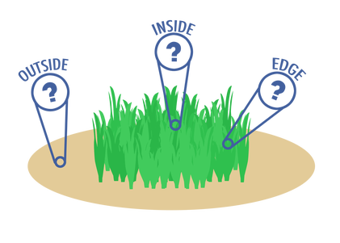

		<!-- Main -->
			<article id="main">
					
				<!-- One -->
					<section class="wrapper style4 container">
					
						<!-- Content -->
							<div class="content">
								<section>
										<header>
										<h3><strong>Environmental drivers of the seagrass microbiome
</strong></h3> </header>

<div class="row">
<div class="6u">
<a class="image featured special"></a></div>
<div class="6u">
<p> A series of projects investigating the potential biotic and abiotic drivers of microbiome assembly in seagrass beds including observing (1) differences across locations within a seagrass patch, (2) differences related to proximity to a marina and (3) succession during ammonification. These projects are associated with a larger effort, the <a href="https://seagrassmicrobiome.org/">Seagrass Microbiome Project</a>.</p>

</div></div>
									
									
									<header>
										<h4><strong>(1) Seagrass microbiome variation at patch edge</strong></h4>
									</header>
									<p>Seagrass beds are progressively affected by climate change, pollution and habitat destruction. As a result, seagrass is vulnerable to habitat fragmentation. This fragmentation expands the perimeter of the seagrass beds while decreasing the area the beds occupy, significantly changing the habitat available to macrofauna. Habitat fragmentation can thus lead to greater edge effects and results in increased biodiversity at the edge of habitats. </p>
								<div class="row">
									<div class="6u"><p>
										The goal of this project was to compare microbial communities obtained from the <strong> inside </strong>, <strong> edge </strong> and <strong>outside </strong> of beds of the seagrass, Zostera marina. We found that <a href="https://peerj.com/articles/3246/?td=bl">"Microbial communities in sediment from Zostera marina patches, but not the Z. marina leaf or root microbiomes, vary in relation to distance from patch edge"</a>. </p>
									</div>
									<div class="6u">
									<a class="image featured special"></a></div></div>
									
								</div>
									
									<header>
											<h4><strong>(2) Effect of marina proximity on seagrass microbiome</strong></h4>
										</header>
					
										<p> Seagrass populations are susceptible to human impact, particularly in high traffic areas like marinas. Here, as part of a larger project looking at tunicate abundance led by Sofie Voerman, we investigated whether proximity to a marina is correlated with the taxonomic composition and structure of the Zostera marina microbiome. The RMarkdown file for the analysis can be found on <a href="https://figshare.com/articles/Marina_proximity_16S_rRNA_gene_amplicon_analysis/6998636"> Figshare. </a> Further discussion of this project is also available in <a href="https://pqdtopen.proquest.com/doc/2460090049.html?FMT=ABS"> Chapter 2 of my dissertation.</a>  </p>
										
										<header>
											<h4><strong>(3) Ammonification in seagrass sediments</strong></h4>
										</header>
										<p> An important process that occurs in seagrass beds is ammonification, the first step in early diagenesis (the combination of biological, chemical and physical processes that act on deposited organic matter). However not much is known about how this process is affected by microbial community composition or seagrass bed characteristics. Here, we sequenced the 16S rRNA gene to determine the microbial community composition of seagrass bed sediments with the goal of identifying which member(s) of the community might be responsible for the ammonification rates observed. Sediment was collected from 72 plots from a 15 month long field experiment in which Zostera marina genotypic richness and relatedness were manipulated and the rate of ammonification was measured in sediment from these plots at several different time points post field collection. In our paper, <a href="https://peerj.com/articles/3674/">"Microbiome succession during ammonification in eelgrass bed sediments"</a>, we observed microbial community succession related to sulfur cycling, but could find no correlation between the community and rates of ammonification. </p>
									
							
								</section>
							</div>

					</section>
					
					
					
					
						
										
								
					
			</article>
